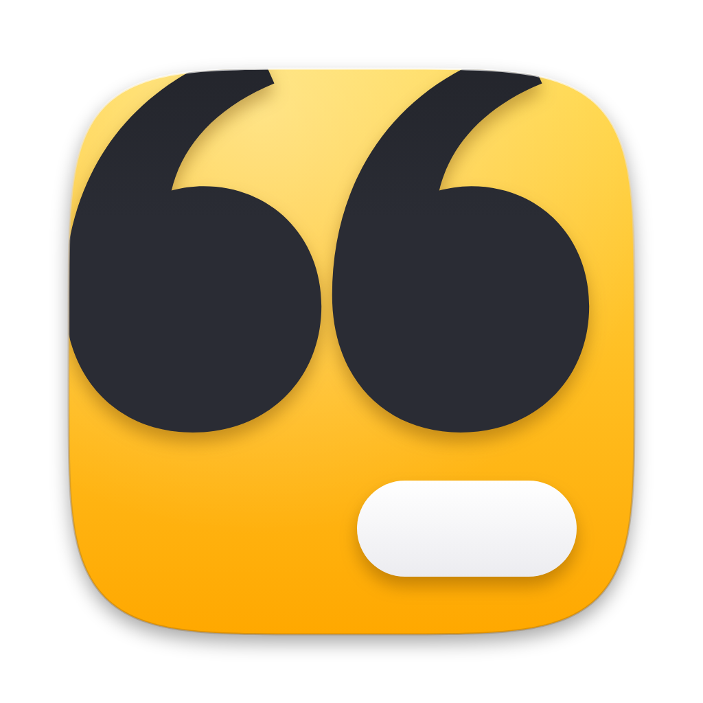

Open CaptionsSupport
Help for Open Captions on Mac, iPhone and Android.
English
For help, bug reports or store review questions, contact kontakt@coderoad.pl. Please include your device model, system version and app version.
Getting started
- Create a new project and choose a video file.
- Transcribe the video. The first use of a speech engine asks before downloading its model.
- Edit captions, fix names in the dictionary, choose a style and position the captions.
- Export an MP4 with burned-in captions, or export SRT/VTT subtitle files.
Frequently asked questions
Does Open Captions upload my videos?
No. Captioning and export run on your device. Model downloads are the only external network requests and start only after you agree.
Why does the app download a model?
On-device speech recognition needs a large model. It is downloaded once for the engine you choose and then used offline.
Which video sources are supported?
On Mac, use the file picker or drag a video into the app. On phones, choose videos through Photos, Gallery or Files. The app works with videos you select.
Where are projects stored?
Projects are stored locally in the app data folder or app container. Delete a project in the app to remove its local project data.
How does Mac server mode work?
The Mac can serve the editor on your local network or private Tailscale network. Access requires the token shown by the server, and the project data stays on that Mac.
Licence
Open Captions is free and open-source software under the MIT licence. Third-party licences are listed in the app.
Polski
W sprawach pomocy, błędów i pytań do recenzji w sklepie napisz na kontakt@coderoad.pl. Podaj model urządzenia, wersję systemu i wersję aplikacji.
Pierwsze kroki
- Utwórz nowy projekt i wybierz plik wideo.
- Przepisz mowę na tekst. Przy pierwszym użyciu danego silnika aplikacja pyta przed pobraniem modelu.
- Popraw napisy, napraw nazwy w słowniku, wybierz styl i ustaw położenie napisów.
- Wyeksportuj MP4 z wtopionymi napisami albo pliki napisów SRT/VTT.
Najczęstsze pytania
Czy Open Captions wysyła moje filmy?
Nie. Tworzenie napisów i eksport działają na Twoim urządzeniu. Pobieranie modeli to jedyne zewnętrzne żądania sieciowe i zaczyna się tylko po Twojej zgodzie.
Dlaczego aplikacja pobiera model?
Rozpoznawanie mowy na urządzeniu wymaga dużego modelu. Pobierasz go raz dla wybranego silnika, a potem używasz offline.
Jakie źródła wideo są obsługiwane?
Na Macu użyj wyboru pliku albo przeciągnij film do aplikacji. Na telefonach wybierz film przez Zdjęcia, Galerię albo Pliki. Aplikacja pracuje na wskazanych przez Ciebie filmach.
Gdzie są przechowywane projekty?
Projekty są przechowywane lokalnie w folderze danych aplikacji albo w kontenerze aplikacji. Usuń projekt w aplikacji, aby usunąć jego lokalne dane.
Jak działa tryb serwera na Macu?
Mac może udostępnić edytor w sieci lokalnej albo prywatnej sieci Tailscale. Dostęp wymaga tokena pokazanego przez serwer, a dane projektów zostają na tym Macu.
Licencja
Open Captions to darmowe oprogramowanie open source na licencji MIT. Licencje komponentów zewnętrznych są wymienione w aplikacji.
Last updated: 2026-10-10.